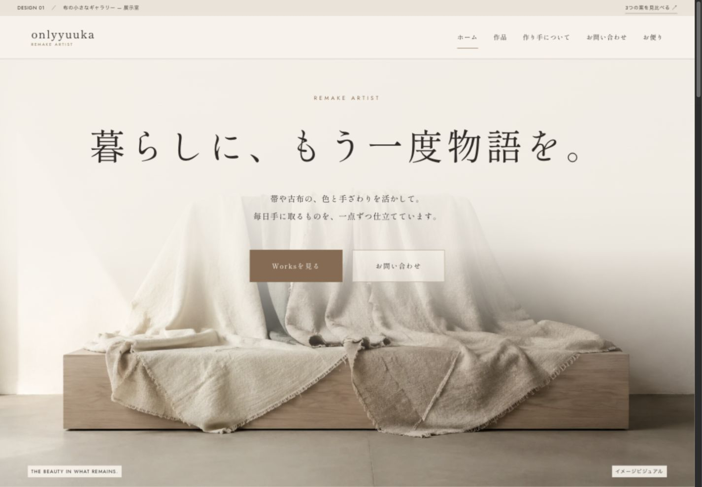
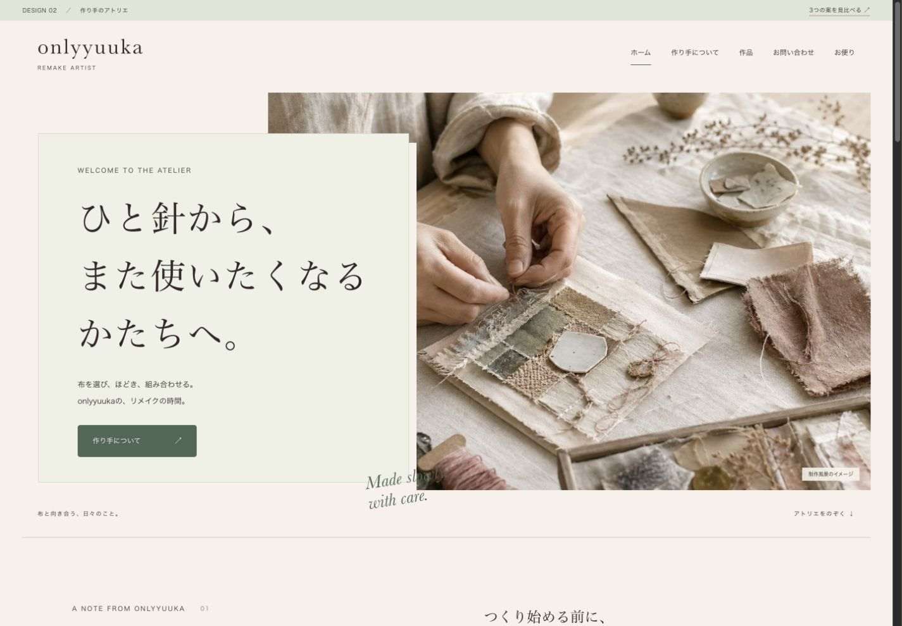
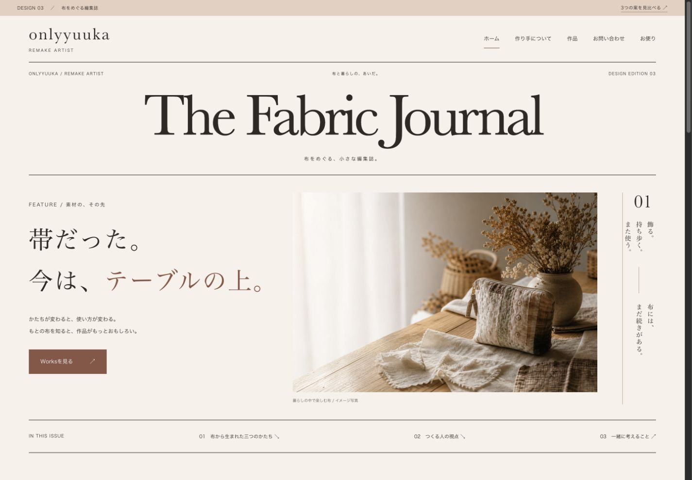

01 / 作品を主役に
布の小さなギャラリー
作品を主役に、写真と見出しを一体に。展示室に入るような第一印象をつくります。
このデザインを見るONLYYUUKA / WEBSITE DESIGN / 2026.09
onlyyuukaのホームページを、3つの方向性でご用意しました。
それぞれの画面を見ながら、好きな雰囲気や見せ方を探してみてください。

01 / 作品を主役に
作品を主役に、写真と見出しを一体に。展示室に入るような第一印象をつくります。
このデザインを見る
02 / 作り手を主役に
制作の手元、布を選ぶ視点、つくる時間。人と手仕事への親しみから、作品に出会う構成です。
このデザインを見る
03 / 素材の変化を主役に
「帯だった。今は、テーブルの上。」素材から作品への変化を、短い記事のように読み進めます。
このデザインを見る各案とも Home・About・Works・Contact の4ページ。写真・原稿はデザイン検討用です。作品詳細・フォームの入力確認をお試しいただけますが、送信・登録は行いません。
HOW TO CHOOSE
| 比べるところ | 01 展示室 | 02 アトリエ | 03 編集誌 |
|---|---|---|---|
| 第一印象 | 写真と言葉が一体、展示室のような広がり | あたたかい、作り手が近い | 知的、素材の変化が気になる |
| 情報の順番 | 写真とメッセージ → 制作の考え → 作品 → 作者 → 相談 | 制作の手元 → 作者の視点 → 工程 → 作品 | 素材の変化 → 作品ごとの記事 → 作者 → 相談 |
| 向いている見せ方 | 作品性を、中央の見出しと大きな写真で伝える | 人柄・丁寧なものづくりの紹介 | リメイクの面白さ・読みものとしての紹介 |
| 特にほしい素材 | 余白のある横長写真・作品写真・制作中の手元 | 本人の手元・制作場所・制作の言葉 | 同じ作品の制作前後・使う場面・短い解説 |
| 色と文字 | 生成り×茶、明朝、写真に重なるタイトル | 生成り×セージ、明朝、ノートのような構成 | 生成り×ローズ、セリフと罫線、記事の構成 |
01は写真と見出しが一体の構図。名刺サイトとして作品の魅力を見せやすく、展示・取材・協業の相談にもつなげやすい構成です。「人柄をもっと伝えたい」なら02、「素材の変化がいちばんの魅力」なら03が合います。方向が決まったら、ほかの案の好きな部分を取り入れることもできます。
CONTENTS & MATERIALS
作品写真、作家紹介、問い合わせ、運用まで。